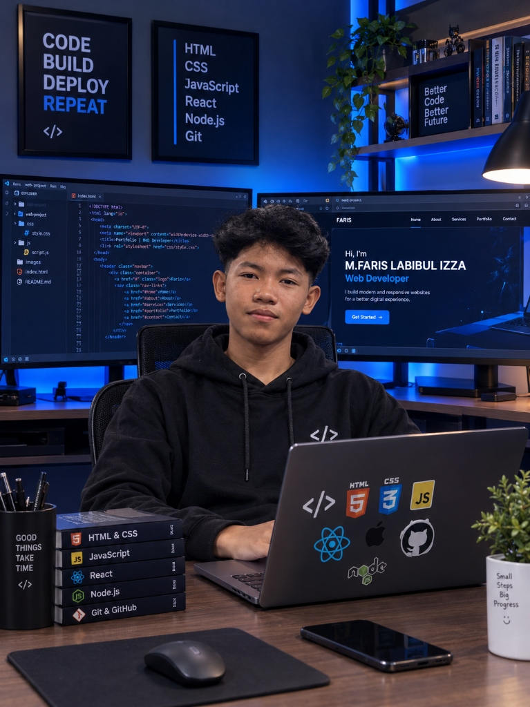

M. Faris Labibul Izza
Siswa Kelas XII TJKT 2 di SMK QUEEN AL FALAH dengan dedikasi tinggi pada dunia Web Development dan Teknik Jaringan Komputer. Siap merancang website modern yang cepat, elegan, dan fungsional.
SCROLLTentang Saya
Mengenal lebih dekat siapa saya, latar belakang sekolah, dan antusiasme saya di ranah teknologi modern.

Halo! Saya M. Faris Labibul Izza, seorang pembelajar aktif dan pengembang pemula (Junior Developer) yang berbasis di Indonesia. Saat ini saya menempuh pendidikan di SMK QUEEN AL FALAH pada jurusan Teknik Jaringan Komputer dan Telekomunikasi (XII TJKT 2).
Saya memiliki ketertarikan yang sangat kuat pada dunia pemrograman web frontend & backend (HTML, CSS, JavaScript, React, Node.js) serta arsitektur jaringan komputer (MikroTik, Routing, dan Server). Saya selalu termotivasi menciptakan solusi teknologi yang efisien, modern, serta bermanfaat bagi banyak orang.
Riwayat Pendidikan & Pengalaman
Jejak langkah pendidikan formal dan ragam pengalaman praktis yang membentuk keahlian saya hingga saat ini.
Riwayat Pendidikan
Fokus mempelajari arsitektur jaringan komputer, konfigurasi router MikroTik & Cisco, administrasi sistem operasi jaringan Linux/Windows Server, serta integrasi teknologi web modern.
Membangun fondasi logika berpikir terstruktur, kedisiplinan belajar, pendidikan karakter, serta pengenalan awal pada perangkat komputer dan teknologi digital.
Pengalaman & Praktik
Mengembangkan website responsif dengan tema futuristik, landing page, dan antarmuka web interaktif memanfaatkan HTML5, CSS3 modern, JavaScript, React, serta Node.js.
Melakukan instalasi topologi jaringan, crimping kabel UTP Cat5e/Cat6, konfigurasi IP addressing, subnetting, bandwidth management, hotspot billing, serta troubleshooting hardware & software.
Keahlian & Penguasaan Alat
Kombinasi teknologi pengembangan web dan infrastruktur jaringan yang saya tekuni.
Portofolio Proyek
Beberapa contoh karya praktikum, pengembangan web, dan simulasi jaringan yang pernah saya rancang.
Cosmic Dark Portfolio
Website portofolio pribadi bergaya tema luar angkasa dengan latar bintang interaktif, floating navbar bercahaya biru, dan responsive glassmorphism.
Simulasi Jaringan Lab Sekolah
Konfigurasi topologi jaringan komputer lengkap menggunakan MikroTik RouterOS dengan fitur Hotspot Captive Portal, DHCP Server, dan Bandwidth Limiter.
Modern Web Application UI
Eksperimen antarmuka web modern dengan dynamic typing, animasi cards 3D tilt, visualisasi statistik real-time, dan desain mobile first.
Hubungi & Kolaborasi
Punya pertanyaan, tawaran proyek, atau ingin berdiskusi seputar teknologi dan jaringan? Hubungi saya melalui kontak di bawah!
Saluran Komunikasi
Klik salah satu saluran di bawah untuk langsung terhubung dengan akun resmi saya.
Kirim Pesan Cepat
Isi form berikut, pesan otomatis akan diarahkan langsung ke WhatsApp saya.